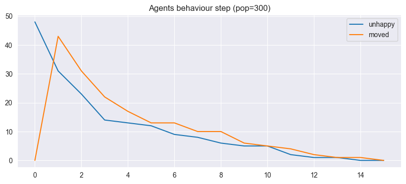
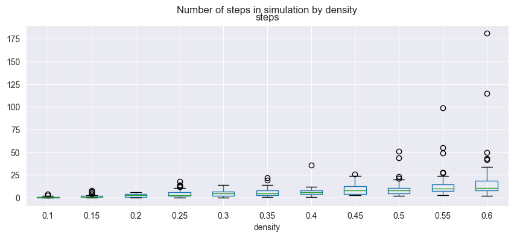

A recent article in the 1 November 2024, Daily Skimm discussed an article in the New York Times which analysed the movement of voters in the United States. The article found that voters are increasingly moving to neighbourhoods where the majority of residents share their political views.
This change leading to increased polarisation (not to mention that some do not think being an adjudicated rapist is a barrier to being elected) are in the United States.
There are a number of models to look at how segregation may appear with only mild preferences in the individuals in the system. One of these is Schelling Model which is an agent-based model where:
By default, the number of similar neighbours the agents need to be happy is set to 3 and they have up to 8 possible neighbours (Moore neighbourhood). That means the agents would be perfectly happy with a majority of their neighbours being of a different color (e.g. a Blue agent would be happy with five Red neighbours and three Blue ones). Despite this, the model consistently leads to a high degree of segregation, with most agents ending up with no neighbours of a different color.
Before we start implementing the model, you should seriously have a look at the blog entry created by Vi Hart and Nicky Case. Vi Hart produces amazing content and well worth following

Finally, if you are interested in reading the original paper on this see Schelling, Thomas C. Dynamic Models of Segregation. Journal of Mathematical Sociology. 1971, Vol. 1, pp 143-186.
The Schelling model traditionally talked about agents having different colours. I switched to state so my implementation is more similar to the Game of Life and Fire model. The Agent class has a state attribute that is either JETS or SHARKS. (I did now want to use RED and BLUE.)
There are two differences between this model and the previous models:
To move an agent to a random empty location we can use the following code:
1 | |
to move an agent to a random location with at least one neighbour of the same state we could do something like the following:
1 2 3 4 | |
Agent and ModelAgent classstate which is JETS, or SHARKS. This corresponds to the colour of the agent in the traditional Schelling model.get_neighbors to return a list of all neighbours.is_happy to check if the agent is happy.step to compute its behaviour based on its state and the state of its neighbours.1 2 3 4 5 6 7 8 9 10 11 12 13 14 | |
Model classThe Model class stores the model parameters,
the model geometry (space/grid),
and the agents in the model.
The basic structure of this class is
1 2 3 4 5 6 7 8 9 10 11 12 13 14 15 16 17 18 19 | |
Agent classThe get_neighbors method:
The is_happy method:
model.pr_same.The step method:
self.model.grid.move_to_empty method.Model classThe Model class has parameters width, height, density, and pr_same. The density parameter is the proportion of cells that are occupied by agents.
The pr_minority is the size of the minority class, JETS,
and the pr_same parameter is the proportion of neighbours that need to have the same state as the agent for the agent to be happy.
The model space is a SingleGrid with toroidal boundary conditions. This the same as that used in the Game of Life.
Creating the agents is done using a loop similar to the fire model by iterating over the grid locations and create an agent (with probability density). When creating agent we set its stateto JETS based on pr_minority.
We will add stuff here later, when we add data collection facilities.
The visualisation and animation is practically the same as in the Fire Model, the only addition is the letter X for agents that are not happy.
The mesa library has a DataCollector class that can be used to collect data during the simulation. We will add a data collector to collect the number of happy agents at each step. This will allow us to plot the number of happy agents over time.
running flag to Model classIn Model.__init__, in "# start simulation" section we set running flag to True, to indicate that the model is still running. This flag will be set to False when there are no unhappy agents.
In Model.step we first check to see if the model is still running, if not we return immediately. Otherwise we perform the model step. Then check if there are any unhappy agents, if not we set the running flag to False.
1 2 3 4 5 6 | |
Now, with running flag implemented we can run a simulation as follows
1 2 3 | |
move counter variable to Model classInstead of (or in addition to) counting the number of unhappy agents at each step, we can add a counter variable to the Model class that is incremented each time an agent is moves. This counter is reset at start of each Model.step call. So:
In Model.__init__, in "# start simulation" section we set moved counter to zero.
In Model.step we first reset the moved counter to zero.
Agent.step method.running flag to False, when moved is zero at end of the step. So simulation stops when no agents are moved instead of when no agents are unhappy. So we use1 | |
To use the DataCollector class, we create an instance of it in the Model.__init__ method. Where we list the information we want to collect. We can use the DataCollector to collect the number of steps, the number of agents that have moved, and the number of unhappy agents at each step.
1 2 3 4 5 6 7 | |
Then in Model.__init__ we add the following line to collect the data:
1 | |
Finally, in the Model.step method we add the following line to collect the data at each step:
1 | |
The DataCollector class collects the data in a pandas DataFrame. We can access the data using the get_model_vars_dataframe method. This method returns a DataFrame with the data collected.
1 2 | |
| steps | moved | unhappy | |
|---|---|---|---|
| 0 | 0 | 0 | 48 |
| 1 | 1 | 43 | 31 |
| 2 | 2 | 31 | 23 |
| 3 | 3 | 22 | 14 |
| 4 | 4 | 17 | 13 |
We can plot the data using the matplotlib library. For example, we can plot the number of unhappy agents and the number moved over time using the following code:
1 2 3 4 5 | |
This will produce a plot similar to the following:

The mesa library also has a BatchRunner class that can be used to run multiple simulations with different parameters.
For example, we can use the BatchRunner to run the Schelling model with different values of the density parameter. So we could write
1 | |
and then run the simulations using the BatchRunner class using:
1 2 3 4 5 6 7 8 | |
This code creates a DataFrame with the results of the simulations. The DataFrame has a row for each simulation and a column for each parameter and model variable that was collected.
1 | |
| RunId | iteration | Step | width | height | density | steps | moved | unhappy | |
|---|---|---|---|---|---|---|---|---|---|
| 0 | 0 | 0 | 1 | 10 | 10 | 0.1 | 1 | 3 | 0 |
| 1 | 1 | 0 | 1 | 10 | 10 | 0.15 | 1 | 1 | 0 |
| 2 | 2 | 0 | 3 | 10 | 10 | 0.2 | 3 | 1 | 0 |
| 3 | 3 | 0 | 6 | 10 | 10 | 0.25 | 6 | 1 | 0 |
| 4 | 4 | 0 | 4 | 10 | 10 | 0.3 | 4 | 2 | 0 |
We could generate a boxplot of the number of steps in the simulation by density using the following code:
1 2 3 4 5 6 7 | |
This will produce a plot similar to the following:

As the population density increases the number of steps in the simulation needed before agents are all happy increases.